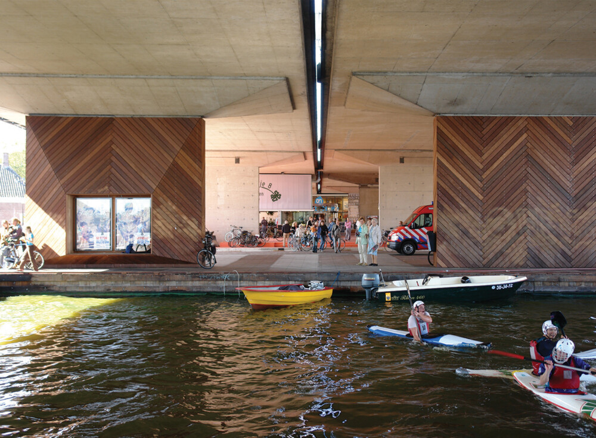

Hover over the red points on the map and click on them to learn more about the five examples of revitalisation of underutilised spaces under flyovers.
As the map zooms in to focus on a specific site, the specific area that has been revitalised is marked in red. Since they are spaces under flyovers, they are found under elevated roads, that are marked in purple.
To explore other locations, click on the home button  on the map to return to the default extent of the map, and then click on a new point on the map.
on the map to return to the default extent of the map, and then click on a new point on the map.
For optimal viewing experience, please access using a desktop instead of mobile.
Claiborne Corridor, New Orleans, United States
A Community's Desire to Undo 60 Years of Urban Racism
Claiborne Corridor is a 19-block corridor located under the Interstate-10 Expressway, along North Claiborne Avenue between St Bernard Avenue and Canal Street, in New Orleans, Louisiana, USA.
It is within the Treme neighbourhood, the oldest established Black neighbourhood in the US and the only one where emancipated slaves could live in all of New Orleans.
BACKGROUND
The underutilised space came to exist in 1967 when the Interstate-10 Expressway was constructed, cutting through the Treme neighbourhood.
This was one out of the many urban renewal projects across the US that disproportionately impacted African American communities.
Specific to the I-10, it resulted in the destruction of 326 Black-owned businesses, numerous homes and the split of the entire neighbourhood into two (Feldman, 2017).
While there were numerous visions to revitalise the area over the decades, especially after Hurricane Katrina hit in 2005, it was only in 2017 when the opportunity presented itself.
In that year, the City of New Orleans entered into a 20-year joint-use agreement with the Louisiana Department of Transportation and Development to allow the area under the overpass to be developed as a public marketplace and community space (Berlin, 2022).
This kickstarted a multi-year process of community engagement and involvement from different levels of government that eventually created the Cultural Innovation District (CID) at Claiborne Corridor.
ACTIVATION PROCESS
Between May and October 2017, a set of eight workshops were conducted to outline initial community wishes to address issues of inequality and racism through the space's revitalisation (Colloqate, 2017).
This eventually crystallised into the formation of Ujamaa Economic Development Council (EDC) in 2018, a formation of advisory committee of various community stakeholders dedicated to the equitable redevelopment of the Claiborne Corridor and adjacent communities, to work on these findings and develop a Master Plan for the space.
The master plan calls for four different zones within the CID, each with its own unique programming and design elements (Ujamaa, n.d.).
The project received an early boost through an $820,000 grant from the US Department of Commerce, meant to support a green marketplace featuring small and micro-businesses.
Additional funding came from city bond funds and economic development departments, resulting in a total of $2.4 million allocated for the first phase of development.
The community is also mobilised in this first phase, by having artists paint murals of legendary New Orleanians on the columns of the highway.
This first phase, Backatown Plaza, was officially opened in 2024 (Office of the Mayor, 2024).
GOVERNANCE AND MAINTENANCE
Today, the CID operates as an extension of the Ujamaa EDC.
Ujamaa oversees the management and daily operations of the district, ensuring that the community's vision for the space, as expressed in the Master Plan, is realized and sustained.
REFERENCES
To explore other locations, click on the home button on the map to return to the default extent of the map, and then click on a new point on the map.
The Bentway, Toronto, Canada
A Public-Private Partnership Space in a (Largely) Public-Private Partnership City
The Bentway is a public multi-use space located under the Gardiner Expressway, between Fort York Boulevard and Fort York Historic National Site.
It is most famous for being an ice-skating park during the winter months, but it also serves as a public art gallery, skating park and a venue for various events throughout the year.
It is situated within the Fort York neighbourhood in downtown Toronto, and surounded by high-rise residential developments.
BACKGROUND
Although there have been intentions to create "a plaza-like area" with "publicly-accessible thoroughfares for pedestrians..., public art... [and] outdoor amenity space" at this specific area since 2004, it was Ken Greenberg, a renowned urban designer and author, who got the ball rolling in 2011.
Then, he pitched this idea to urban planner Judy Matthews and her husband Wilmot, an investment banker, who wanted to fund a "legacy project" in the city (Hess & Stevenson-Blythe, 2022).
The idea won the support of the city because it was also aligned with the city's aims to enliven the underutilised areas along the elevated portions of Gardiner Expressway (marked in purple in the map), which has long served as a barrier between the main downtown areas to its north and the Waterfront to its south.
After an initial seed donation of CAD$25 million from Judy and Wilmot, the city announced "Project: Under Gardiner" to revitalise the entire stretch, of which the Bentway is a part.
The Bentway was officially opened to the public in January 2018, with about 20,000 people coming to use the space on its opening weekend (Cecco, 2024)


GOVERNANCE AND MAINTENANCE
A City Council report recommended the creation of a new non-profit organisation to manage and finance the day-to-day operations of the Bentway (City of Toronto, 2016).
This non-profit organisation, The Bentway Conservancy, was established the following year.
The decision to let a private entity, albeit non-profit, to manage a public space that is essentially owned by the city (by virtue of the expressway that runs above it) is made because the city would face serious budget constraints had it been under full municipal jurisdiction.
This practice is also in line with numerous other projects done across Toronto, where the city would own the infrastructure but let a separate private entity to run it (Hess & Stevenson-Blythe, 2022).
Pertaining to funding, the city committed CAD$10 million, to be disbursed over a period of eight years, to the Bentway Conservancy.
The city also empowers the Bentway Conservancy to seek alternative funding sources such as sponsorships, donations and collecting fees from nearby businesses through Business Improvement Association.
This conservancy model has proven successful because the Bentway remains a well-attended space seven years after its opening.
The Conservancy is also appointed as partners with the city to realise "Project: Under Gardiner", which has since been rebranded as Under Gardiner Public Realm Plan.
REFERENCES
To explore other locations, click on the home button on the map to return to the default extent of the map, and then click on a new point on the map.
One Green Mile, Mumbai, India
A Blueprint for Public-Private Partnership in the Global South
One Green Mile is located under the Elphinstone Flyover, along Senapati Bapat Marg, in Mumbai, Maharashtra, India.
This revitalised public space contains a wide range of facilities such as play areas, an amphitheatre, dedicated cycling tracks and a vachanalaya, a common word to refer to a library in the Marathi language.
BACKGROUND
The flyover was built in the early 2000s to alleviate traffic congestion in the Lower Parel district as it transformed into a bustling financial hub.
As such, the flyover is meant for motorists who want to bypass the multiple junctions on ground level, leaving the local traffic to travel below while the through traffic moves on the flyover.
Recognizing the potential of these neglected areas that came to be under the flyover, in 2020, Nucleus Office Parks (NOP), a major landowner in the vicinity, partnered with the Brihanmumbai Municipal Corporation (BMC) to reimagine the stretch beneath the flyover.
The objective was to transform this vehicle-dominated corridor into a "Complete Street," prioritizing pedestrian accessibility, community engagement, and environmental sustainability.
ACTIVATION PROCESS
NOP and BMC engaged StudioPod, a Mumbai-based architecture and urban design firm, to design the public space (Landezine, 2023).
A multidisciplinary team was then formed to create a plan for the space over two years.
In creating the plan, the team engaged in extensive stakeholder engagemnet to find out community needs and desires.
They also made detailed assessments of the local traffic conditions through on-the-ground traffic surveys (Architizer, n.d.).
Lastly, they also tried out tactical urbanism trials on segments of the Mile to see how users interact with the proposed spaces, before fully implementing it (StudioPod, n.d.).
REFERENCES
To explore other locations, click on the home button on the map to return to the default extent of the map, and then click on a new point on the map.
A8ernA, Zaanstad, the Netherlands
A Pioneer in Revitalising Neglected Spaces Under Flyover
A8ernA is located under the A8 motorway, between N203 provincial road and the Zaan River, in Zaanstad, North Holland, the Netherlands.
It is one of the earliest instances of spaces under flyovers that were revitalised and remains one of the gold standards on community-engaged public-space revitalisation efforts.
BACKGROUND
In the 1970s, the construction of the A8 motorway bisected Koog aan de Zaan, creating a physical barrier that separated the town's historic church from its town hall.
The elevated highway, supported by seven-meter-high pillars, resulted in a 400-meter-long and 40-meter-wide strip beneath it that remained neglected for over three decades (Architonic, n.d.).
This area became a no-man's land, primarily used for haphazard parking and lacking any significant communal function.
Recognizing the detrimental impact of this division on the town's social fabric, the Zaanstad City Council initiated a participatory urban planning intervention in 2003 (Public Space, n.d.).
The goal was to restore connectivity between the town's two sides and revitalize the under-highway space into a functional public domain.
ACTIVATION PROCESS
The activation of A8ernA was a two-year collaborative effort involving local residents, business owners, and the municipal government.
Through a highly participatory process, a document titled "A8ernA" was drafted, encapsulating the community's desires and outlining a comprehensive program of uses for the space.
The proposed amenities included a connection to the River Zaan, a park, an exhibition space envisioned as a 'graffiti gallery,' parking facilities for 120 vehicles, a supermarket, and shops such as a flower and pet store (Public Space, n.d.).
The space was divided into three distinct zones by two intersecting streets.
The central zone features a covered square accommodating a supermarket, flower and pet shops, letterboxes, and a luminous fountain.
The eastern end includes a sculptural bus stop and a small harbor with a panoramic platform.
The panoramic platform offers citizens an exceptional view of the River Zaan, which had previously been obscured by dense industrial buildings along its banks.
Meanwhile, the western end was designed as a playground for children and teenagers, comprising a 'graffiti gallery,' skateboarding park, breakdance stage, football and ping-pong tables, a seven-a-side football pitch, a basketball court, and 'lovers' benches' (Singhal, 2011).

REFERENCES
To explore other locations, click on the home button on the map to return to the default extent of the map, and then click on a new point on the map.
Taman Film, Bandung, Indonesia
A Cautionary Tale about Politicisation of Public Spaces
Taman Film (Film Park) is a public space located under the Jalan Layang Pasupati flyover, in Bandung, West Java, Indonesia.
As the name suggests, on top of accommodating communal/cultural gatherings for residents in the area, the space also has audiovisual equipment that can facilitate public screenings of films or football matches.
Taman Film is part of a chain of parks within the entire revitalised area that is marked red on the map - it also comprises Taman Jomblo (Lonely Hearts' Park), a skate park and an indoor futsal court (Heinzelmann & Suryawinata, 2020).

BACKGROUND
The underutilised space came to exist after Jalan Layang Pasupati Flyover was inaugurated in June 2005, meant to connect the city of Bandung directly to the then-capital city of Jakarta.
The sheltered area under the flyover made it a hotspot for illicit criminal activities such as drug dealing, cockfighting and even gang fights (Ihsanti & Sugiyantoro, 2024).
It was from 2010 onwards when the space also started to accommodate other economic activities and vehicle parking, largely due to the opening of a shopping mall just to the south of the area.
In 2014, after winning the Bandung mayoral election, Mr Ridhwan Kamil sought to make good on his campaign promises to revitalise and improve the quality of public spaces in the city.
That resulted in the Thematic Parks Bandung Programme, which included the creation of Taman Film as part of the chain of parks at the site.
The efforts in making the park were largely a top-down one, as the municipal government did not extensively consult the local residents.
Instead, it engaged a Dutch-based architectural firm to develop Taman Film.
Taman Film was inaugurated in September 2014.

GOVERNANCE AND MAINTENANCE
Taman Film is under full jurisdiction of the municipal government, as it appoints staff to manage daily operations and cleanliness of the area.
However, for the first three years, the funding for the park was derived from corporate social responsibility (CSR) funding from two local companies.
Municipal government assumed the financing responsibility thereafter.
Hence, the capital upgrades that were done in 2018, such as carpeting the park with artificial grass, were borne from municipal coffers (Heinzelmann & Suryawinata, 2020).
2018 also happened to be the final year of Mr Ridhwan Kamil in office as Mayor of Bandung.
Nevertheless, Ihsanti and Sugiyantoro (2024) reported that several facilities have fallen into disrepair after the pandemic - including the projector screen and the futsal court.
The quality of cleanliness in Taman Film were also reported to have declined.
It was only as of early 2025 where it is reported that the artificial grass has been re-carpeted and a children's playground has been installed at the site by the municipal authorities (Bagaskara, 2025).
This suggests that the loss of a strong political supporter could lead to lack of political will in keeping a promised public space in state of good repair, especially if there are no secondary sources of funding and management and local organising to manage the space was not done.
REFERENCES
To explore other locations, click on the home button on the map to return to the default extent of the map, and then click on a new point on the map.